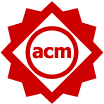
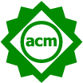
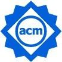
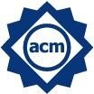

ArtifactsESEC/FSE 2022
Call for Submissions
For ESEC/FSE 2022, artifact badges can be earned for papers published at ESEC/FSE 2022 (Evaluated - Functional, Evaluated - Reusable, and Available). Badges can also be earned for papers published previously (at ESEC/FSE or elsewhere) where the main results of the papers were obtained in a subsequent study by people other than the authors (Replicated and Reproduced). For more information on the classification and the evaluation criteria, see the ACM Artifact Review and Badging guide.
Badges for Papers Published at ESEC/FSE 2022
Authors of papers accepted to the ESEC/FSE 2022 Technical and Industrial Tracks are invited to submit artifacts associated with those papers to the ESEC/FSE Artifact Track for evaluation as candidate Artifacts Evaluated - Functional, Artifacts Evaluated - Reusable, and Artifacts Available. These badges are considered independent and any one, two, or all three can be applied to any given paper. If those artifact(s) are accepted, they will each receive the badges below on the front page of the authors’ paper and in the proceedings.
| Evaluated - Functional | Evaluated - Reusable | Available |
|---|---|---|
|  |  | |
| The artifacts associated with the research are found to be documented, consistent, complete, exercisable, and include appropriate evidence of verification and validation. | Functional + the artifacts associated with the paper are of a quality that significantly exceeds minimal functionality. They are very carefully documented and well-structured to the extent that reuse and repurposing is facilitated. In particular, norms and standards of the research community for artifacts of this type are strictly adhered to. | Author-created artifacts relevant to this paper have been placed on a publically accessible archival repository. A DOI or link to this repository along with a unique identifier for the object is provided. |
Papers with such badges contain reusable products that other researchers can use to bootstrap their own research. Experience shows that such papers earn increased citations and greater prestige in the research community. Artifacts of interest include (but are not limited to) the following.
- Software, which are implementations of systems or algorithms potentially useful in other studies.
- Data repositories, which are data (e.g., logging data, system traces, survey raw data) that can be used for multiple software engineering approaches.
- Frameworks, which are tools and services illustrating new approaches to software engineering that could be used by other researchers in different contexts.
This list is not exhaustive, so the authors are asked to email the chairs before submitting if their proposed artifact is not on this list.
Badges for Replicated or Reproduced Papers
If you are an author of prior SE work since 2015 and the main results of the paper have been obtained in a subsequent study by a person or team other than the authors, the prior SE work is eligible for a Replicated or Reproduced badge.
| Replicated | Reproduced |
|---|---|
|  |  |
| Available + the main results of the paper have been independently obtained in a subsequent study by a person or team other than the authors, without the use of author-supplied artifacts. | Available + main results of the paper have been obtained in a subsequent study by a person or team other than the authors, using, in part, artifacts provided by the author. |
Examples: If Asha published a paper with artifacts in 2019, and Tim published a replication in 2020 using the artifacts, then Asha can now apply for the Replicated badge on the 2019 paper. If Cameron published a paper in 2018 with no artifacts, and Miles published a paper with artifacts in 2020 that independently obtained the main result, then Cameron can apply for the reproduced badge on the 2018 paper.
If the artifact is accepted:
- Authors will be invited to give short talks on this work at ESEC/FSE’22. Thus, each Replicated or Reproduced paper is guaranteed a short talk in the program. One author must register for the conference as author to give this talk.
- Badges in the original publication will be added subject to publisher’s agreement.In other words, one can only add the badges provided the publisher of the earlier paper allows it.
If time permits, authors of papers in ESEC/FSE 2022 that have earned Reusable artifact badges may be invited to give lightning talks to promote their artifacts. This will be subject to availability of time in the conference program. Note that there is no proceeding publication for Artifact papers.
Important Dates
- Artifact Submission Deadline: August 8, 2022
- Artifact Notification: September 14, 2022.
Best Artifact Awards
There will be two ESEC/FSE 2022 Best Artifact Awards to recognize the effort of authors creating and sharing outstanding research artifacts.
Submission and Review
In principle, authors are expected to submit through HotCrp their artifact documentation. This documentation distinguishes two basic types of information - captured in one abstract (two pages max) - depending on the envisioned badge:
- Replicated and Reproduced where the emphasis lies on providing information about how their already published research has been replicated or reproduced as well as links to further material (e.g. the papers and artifacts in question). Note that we encourage submissions for those badges also to nominate other authors (e.g., when authors having reproduced study results want to nominate authors of the original study being replicated/reproduced).
- Functional, Reusable, and Available where the emphasis lies on providing documentation on the research artifact previously prepared and archived. Here, the authors need to write and submit a documentation explaining how to obtain the artifact package, how to unpack the artifact, how to get started, and how to use the artifacts in more detail. The submission must only describe the technicalities of the artifacts and uses of the artifact that are not already described in the paper.
Note that if the authors are aiming for the badges Available and beyond, the artifact needs to be publicly accessible at the time of submission. This means that the HotCrp submission should include the research abstract only providing links to the repositories where the artifact is permanently stored and available. Submitting artifacts themselves through HotCrp without making them publicly accessible (through a repository or an archival service) will not be sufficient for any further badge. In the case of authors applying for the badge Reusable, the artifacts do not necessarily have to be publicly accessible for the review process. In this very case, the authors are asked to provide either a private link / password-protected link to a repository or they may submit the artifact directly through HotCrp (in a zip file) and it should become clear which steps are necessary for authors who would like to reuse the artifact.
Details on the research artifacts themselves are provided next.
Submission for Replicated and Reproduced Badges
For Replicated and Reproduced badges, authors will need to offer appropriate documentation that their artifacts have reached that stage. The HotCrp site will be used for submission, which will be a two pages (max) abstract in PDF format describing the artifact. The abstract should include the paper title, the purpose of the research artifact, the badge(s) you are claiming, and the technology skills assumed by the reviewer evaluating the artifact. Please also mention if running your artifact requires specific operating systems or other environments.
- TITLE: A (Partial)? (Replication|Reproduction) of XYZ. Please add the term partial to your title if only some of the original work could be replicated/reproduced.
- WHO: name the original authors (and paper) and the authors that performed the replication/reproduction. Include contact information and mark one author as the corresponding author. IMPORTANT: include also a web link to a publically available URL directory containing (a) the original paper (that is being reproduced) and (b) any subsequent paper(s)/documents/reports that do the reproduction.
- WHAT: describe the “thing” being replicated/reproduced;
- WHY: clearly state why that “thing” is interesting/important;
- HOW: say how it was done first;
- WHERE: describe the replication/reproduction. If the replication/reproduction was only partial, then explain what parts could be achieved or had to be missed.
- DISCUSSION (if applicable): What aspects of this “thing” made it easier/harder to replicate/reproduce. What are the lessons learned from this work that would enable more replication/reproduction in the future for other kinds of tasks or other kinds of research.
Two PC members will review each abstract, possibly reaching out to the authors of the abstract or original paper. Abstracts will be ranked as follows.
- If PC members do not find sufficient substantive evidence for replication/reproduction, the abstract will be rejected.
- Any abstract that is judged to be unnecessarily critical towards others in the research community will be rejected (*).
- The remaining abstracts will be sorted according to (a) how interesting they are to the community and (b) their correctness.
- The top ranked abstracts will be invited to give lightning talks.
(*) Please note that our goal is to foster a positive environment that supports and rewards researchers for conducting replications and reproductions. To that end, it is important to encourage an atmosphere where presentations pay due respect to both work that is being reproduced/replicated and reproductions/replications. Criticism of other work related to the reproduction/replication is acceptable only as part of a balanced and substantive discussion of prior accomplishments.
Submission for Functional, Reusable, and Available Badges
Only authors of papers accepted to the 2022 Research Track can submit candidate Functional, Reusable, and Available artifacts. Authors should use the HotCrp site for submission. For any of the Functional, Reusable and Available badges, authors must offer “download information” showing how reviewers can access and execute (if appropriate) their artifact.
Authors must perform the following steps to submit an artifact:
- Preparing the artifact.
- Making the artifact publicly available (by using repositories granting public access).
- Documenting the artifact.
- Submitting the artifact.
1. Preparing the Artifact
There are two options depending on the nature of the artifacts: Installation Package or Simple Package. In both cases, the configuration and installation for the artifact should take less than 30 minutes. Otherwise, the artifact is unlikely to be endorsed simply because the committee will not have sufficient time to evaluate it.
Installation Package. If the artifact consists of a tool or software system, then the authors need to prepare an installation package so that the tool can be installed and run in the evaluator’s environment. Provide enough associated instruction, code, and data such that some CS person with a reasonable knowledge of scripting, build tools, etc. could install, build, and run the code. If the artifact contains or requires the use of a special tool or any other non-trivial piece of software the authors must provide a VirtualBox VM image or a Docker container image with a working environment containing the artifact and all the necessary tools.
We expect that the artifacts have been vetted on a clean machine before submission.
Simple Package. If the artifact only contains documents which can be used with a simple text editor, a PDF viewer, or some other common tool (e.g., a spreadsheet program in its basic configuration) the authors can just save all documents in a single package file (zip or tar.gz).
2. Making the Artifact Available
The authors need to make the packaged artifact (Installation Package or Simple Package) available so that the Evaluation Committee can access it. We suggest a link to a public repository (e.g., GitHub) or to a single archive file in a widely available archive format.
If the authors are aiming for the Available badge, the artifact needs to be publicly accessible. In other cases, the artifacts do not necessarily have to be publicly accessible for the review process. In this case, the authors are asked to provide a private link or a password-protected link. In any case, we encourage the authors to use permanent repositories dedidated at data sharing where no registration is necessary for those accessing the artifacts (e.g., please avoid using services such as GoogleDrive).
3. Documenting the Artifact
The authors need to write and submit documentation explaining how to obtain the artifact package, how to unpack the artifact, how to get started, and how to use the artifacts in more detail. The artifact submission must only describe the technicalities of the artifacts and uses of the artifact that are not already described in the paper.
The submission should contain the following documents (in plain text or pdf format) in a zip archive:
- A PDF abstract (2 pages max) describing the artifact.
- A README main file describing what the artifact does and where it can be obtained (with hidden links and access password if necessary). Also, there should be a clear description how to repeat/replicate/reproduce the results presented in the paper. Artifacts which focus on data should, in principle, cover aspects relevant to understand the context, data provenance, ethical and legal statements (as long as relevant), and storage requirements. Artifacts which focus on software should, in principle, cover aspects relevant to how to install and use it (and be accompanied by a small example).
- A REQUIREMENTS file for artifacts which focus on software. This file should, in principle, cover aspects of hardware environment requirements (e.g., performance, storage or non-commodity peripherals) and software environments (e.g., Docker, VM, and operating system) but also, if relevant, a requirements.txt with explicit versioning information (e.g. for Python-only environments). Any deviation from standard environments needs to be reasonably justified.
- A STATUS file stating what kind of badge(s) the authors are applying for as well as the reasons why the authors believe that the artifact deserves that badge(s).
- A LICENSE file describing the distribution rights. Note that to score “available” or higher, then that license needs to be some form of open source license. Details also under the respective badges and the ESEC/FSE 2022 open science policy.
- An INSTALL file with installation instructions. These instructions should include notes illustrating a very basic usage example or a method to test the installation. This could be, for instance, on what output to expect that confirms that the code is installed and working; and the code is doing something interesting and useful.
- A copy of the accepted paper in PDF format.
4. Submitting the Artifact
By August 8, 2022 submit your research artifact at the HotCrp site. The Evaluation Committee may contact the authors within the reviewing period to request clarifications on the basic installation and start-up procedures or to resolve simple installation problems. Instructions will further be sent to the authors (and reviewers) along the reviewing process.
Given the short review time available, the authors are expected to respond within a 48-hour period. Authors may update their research artifact after submission only for changes requested by reviewers in the reviewing phase. Authors submitting an open source repository link are expected to give a tag to time-stamp their submission.
Finally, further information will be constantly made available on the website https://2022.esec-fse.org/track/fse-2022-artifacts.
In case of questions, please do not hesitate contacting the chairs.
Looking forward to welcoming you soon!